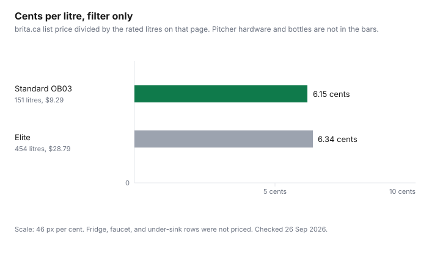

Household Items and Supplies · Canada
Water Filter Costs in Canada: Brita Pitcher vs Fridge Filter vs Under-Sink—Cost per Litre
A fridge light that says "replace filter" is a timer. It is not a price. The price is the cartridge divided by the litres it is rated for, plus whatever you paid for the pitcher or the fridge. This page has that division for two Brita pitcher cartridges whose prices loaded on brita.ca. Fridge OEM filters, certified generics, faucet mounts, under-sink systems, and a bottle of water did not have both a price and a litre rating on a page that loaded. Those rows stay empty. Empty is more useful than a guessed cent.
The municipal bill under the filter is the water and sewer guide. Toronto's charge structure is the Toronto bill explainer. A filter does not find a leak. The meter test does.
Disclosure: Pitcher and fridge filters sold through Amazon.ca storefronts are an offer type. Saving Optimizer may earn a commission if we later add a partner link. We do not currently claim an Amazon partnership. Education only. This is not health advice.
Key takeaways
- Brita standard replacement OB03, brita.ca, 26 Sep 2026: $9.29 for 151 litres, 6.15 cents a litre. The page says about every two months for an average family.
- Brita Elite: $28.79 for 454 litres, 6.34 cents a litre. The page ties a six-month change to about 11 glasses a day.
- Following those schedules for a year is about $55.74 of standard cartridges or $57.58 of Elite cartridges, before the pitcher. That is the maker's timing, not your meter.
- Toronto's 2024 drinking-water analysis averaged hardness at 121 mg/L as calcium carbonate. Use the report. Do not buy a filter from a hardness headline alone.
- No fridge-filter price, no NSF product listing, and no bottled-water price loaded. They are not compared in dollars.
Do you need a filter? How to read your municipal drinking-water report (and private-well exceptions)
City water in Canada is treated and tested under provincial rules. A national guidelines document is the place to read what a parameter means. This draft did not restate Health Canada's Guidelines for Canadian Drinking Water Quality beyond telling you to open them, because a summary page with the aesthetic-versus-health distinction was not the page used for the numbers below. The numbers used are the city's. Toronto's Drinking Water Analysis Summary for 2024 lists hardness as calcium carbonate, calculated, average 121 mg/L, range 116 to 131, for the year. The same row shows 80–100 in a guideline column. Hardness is why kettles scale and why soap can feel thin. It is printed here as the city's monitoring line, not as a finding that Toronto tap water is unsafe, and not as a reason every household must own a pitcher.
Read the report for the contaminant you actually want reduced, then read whether the cartridge claims that reduction. If the report does not show the thing the ad is selling fear about, the cartridge is a taste product. Taste is a legitimate reason to filter. It is a different reason from a health claim. Private wells are outside the municipal report. Your province's well-water testing page is the instruction, including which bacteria and chemicals to test and how often. This guide does not print a lab price, because none was opened. A pitcher is not a well test.
Cost per litre: pitcher vs faucet mount vs fridge filter vs under-sink (CAD table)
Standard Brita replacement filters for pitchers and dispensers, model OB03, were $9.29 on brita.ca. The page says 151 litres, about two months for the average family. $9.29 divided by 151 is 6.15 cents a litre. The performance data sheet for that filter says replace it every 151 litres and, for maximum efficiency, process no more than 7.5 litres a day. Elite, $28.79, is rated at 454 litres. $28.79 divided by 454 is 6.34 cents a litre. The Elite page says the six-month timing is approximate, based on 454 litres and average family use of 11 glasses a day. Per litre, the two cartridges are close. The difference is how long the cartridge sits in the pitcher and which reductions the Elite page claims. Those claims are Brita's. They are not re-tested here.
A faucet-mount system price with a litre rating did not load. A related line on the Elite page mentioned a faucet filter replacement at $19.99 without litres, so it is not divided. A fridge OEM filter, a certified generic, and an under-sink cartridge did not load with both price and rated litres. Costco's Brita multipack page did not show a price in the text retrieved. The table refuses those rows.
| Cartridge | Price | Rated litres | Cents per litre | Maker's timing |
|---|---|---|---|---|
| Brita standard, model OB03 | $9.29 | 151 | 6.15 | About every two months for an average family. No more than 7.5 litres a day for maximum efficiency, on the performance sheet. |
| Brita Elite | $28.79 | 454 | 6.34 | About six months, tied on the page to 11 glasses a day. |

OEM vs generic fridge filters: NSF/ANSI certification checks and counterfeit warnings
A fridge filter is a model-specific part. The safe check is three matches: the fridge model, the filter model, and a certification listing that covers the reduction you are paying for. NSF/ANSI 42 is the standard people cite for aesthetic chlorine taste and odour. NSF/ANSI 53 is the one cited for health-related reductions. This draft did not open an NSF certified-product listing for a fridge cartridge, and the Brita performance sheet text retrieved did not include a sentence this guide will treat as an NSF certificate number. Do not take a web ad's "NSF" badge as the listing. Search the certifier's database for the model printed on the cartridge you will buy.
Generics that appear in that database for your claims are a different product from a no-name cartridge on a marketplace with a similar photo. Counterfeit risk is the second one: no return path, no model match, a price that is low because the carbon is not the certified part. If the OEM price did not load, the generic is not "half price" in this article. It is unpriced until you open both tags.
Replacement schedules that match real use, not the fridge light
Brita's standard timing, about two months, is an average-family estimate sitting on top of 151 litres. Six filters a year at $9.29 is $55.74 if you follow the calendar and ignore whether you drank 151 litres. Elite twice a year at $28.79 is $57.58. A household that pours one litre a day uses about 365 litres a year, which is roughly two and a half standard cartridges, about $23 at $9.29, or less than one Elite cartridge. A household at the page's 11 glasses a day is who the six-month Elite line was written for. The fridge light does not know your glasses. Write the date you installed the cartridge. Replace at the rated litres or at the manufacturer's maximum months, whichever comes first, and ignore a light that fires while the cartridge still has most of its litres left only if the manual allows a reset. If the manual says the light is the limit, the light wins.
Where filters are cheapest in Canada: Costco multipacks, Canadian Tire and Home Depot sales, Amazon.ca
A multipack is cheaper per cartridge only after you divide and only if you will use the pack before you change fridges. Costco's 8-pack page retrieved for this draft did not include a selling price, so there is no warehouse cent to beat $9.29. Canadian Tire and Home Depot sale tags did not load. Amazon.ca is an offer type under the disclosure. A sale that is a subscription, or a third-party seller, needs the same model-number check as a full-price OEM filter. The Costco household guide is where other bulk rows did have a dated price. Filters were not one of those rows.
Annual cost comparison vs bottled water
Bottled water wins or loses on cents per litre you drink, including the trips and the empties. No bottle price was on a page opened 26 Sep 2026, so the comparison is the method. Take the price on the bottle, divide by the litres on the label, and set it beside 6.15 cents. A 500 mL bottle has to be priced before that division means anything. Add the pitcher in year one if you do not own one. Do not add the municipal water bill as if the filter created it. You pay water and wastewater whether the water passes through carbon or not. The filter's job, if you buy one, is the change in taste or the rated reduction, at the cents above, not a lower utility bill.
Sources & date stamps
- brita.ca standard pitcher replacement page, opened 26 Sep 2026: model OB03, $9.29, 151 litres, about two months.
- brita.ca Elite replacement page, opened 26 Sep 2026: $28.79, 454 litres, six-month timing described as approximate at 11 glasses a day.
- Brita standard filter performance data sheet, text retrieved 26 Sep 2026: replace every 151 litres; no more than 7.5 litres a day for maximum efficiency. Distributed in Canada by Brita Canada Corporation, Brampton.
- City of Toronto Drinking Water Analysis Summary 2024, opened 26 Sep 2026: hardness as calcium carbonate, average 121 mg/L, range 116–131.
Frequently asked questions
Do I need a water filter if I'm on city water?
Start with the city's annual drinking-water report, not with a filter ad. Toronto's 2024 analysis lists hardness as calcium carbonate with an average of 121 mg/L. That sheet is a monitoring result, not a instruction to buy a pitcher. A filter can change taste or reduce contaminants the cartridge is rated for. It is not a substitute for a report that shows a problem, and it is not required by this guide for every municipal customer. Private wells are different: use your province's well-testing page. This draft does not state a lab fee.
What does a water filter cost per litre?
On brita.ca, checked 26 Sep 2026, the standard pitcher replacement OB03 is $9.29 and rated for 151 litres, which is 6.15 cents a litre. The Elite filter is $28.79 and rated for 454 litres, which is 6.34 cents a litre. Those figures are the cartridge only. The pitcher, a faucet mount, a fridge filter, and an under-sink system did not have a complete price and litre rating on a page that loaded, so they are not in the cents.
Are generic fridge filters safe?
This draft did not open an NSF listing or a certified-generic price, so it does not call generics safe or unsafe. The check is the certification mark for the claims you care about, on a listing you can match to the model number, plus a seller you can return to. A marketplace cartridge with no model match to your fridge is the counterfeit risk. Do not buy it because it is cheaper until the certification and the fit are both on the page.
How often should I really change a filter?
Use litres, not only the light. Brita says to replace the standard filter every 151 litres, about every two months for the average family, and not to process more than 7.5 litres a day for maximum efficiency. The Elite page says about every 454 litres, and it ties a six-month timing to an average of 11 glasses a day. If you drink less, the calendar light on a fridge can be early. If you drink more, it can be late. Write the install date and the rated litres.
Is a filter cheaper than bottled water?
It is cheaper when the bottle's price per litre is above the filter's cents per litre, and you actually drink the filtered water. No bottled-water shelf price loaded on 26 Sep 2026, so this guide does not declare a dollar gap. Divide the bottle price by its litres and compare with 6.15 cents. Remember the pitcher or the fridge cartridge's purchase price in the first year, and that a filter does not remove the water and wastewater charges on a municipal bill.